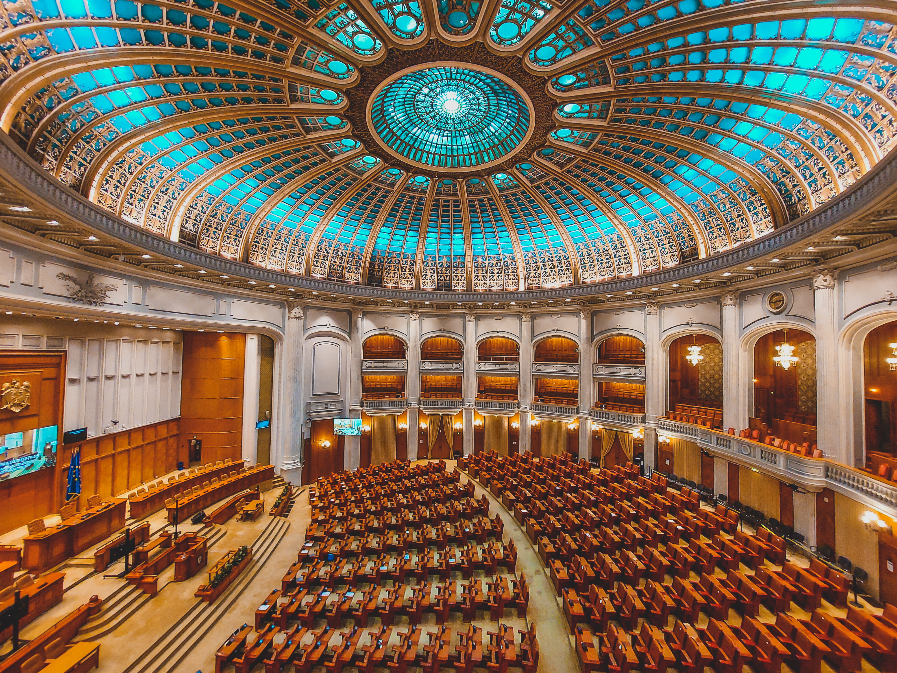
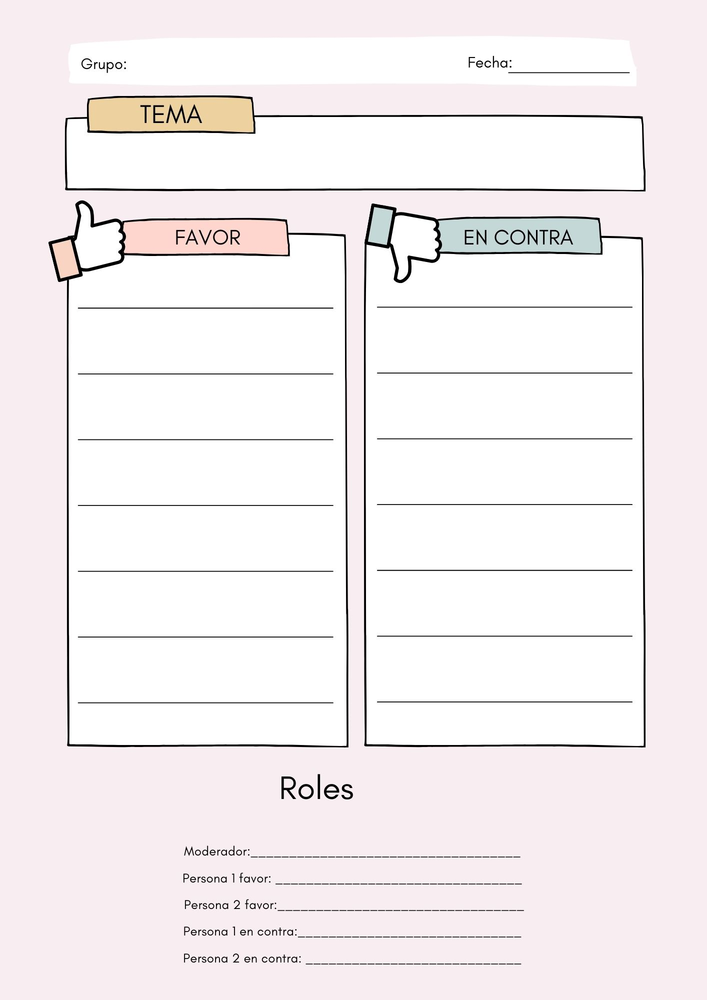
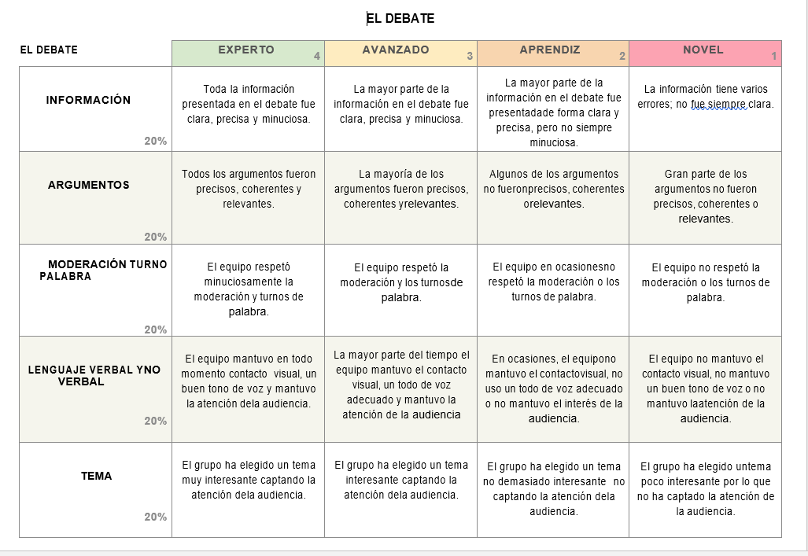

A. Lluvia de ideas
¿Qué es un debate? Vamos a realizar una lluvia de ideas, en grupo, para ver si entre todos llegamos a la conclusión sobre qué es un debate.
Una vez que todos sabemos lo que es un debate, vamos a copiar su definición en el diario de aprendizaje.

B. Elementos del debate.
¿Te has preguntado alguna vez cuáles son los elementos o partes de un debate?

Cuando varios candidatos se presentan a un debate electoral, cada uno presenta sus propuestas y debaten sobre ello.
Los elementos de un debate son los siguientes:
- Apertura: se presenta el moderador, a los oradores, el tema y las normas.
- Cuerpo del debate. Los oradores presentan sus argumentos en el tiempo asignado.
- Cierre: Se exponen las ideas finales, se agradece a los presentes y se termina el debate.
Los participantes en un debate son los siguientes:
1. Moderador.
2. Participantes a favor.
3. Participantes en contra.
4. Público
Copia las partes del debate y los participantes en tu diario de aprendizaje.
C. Preparamos nuestro debate.
Vuestro maestro facilitará al grupo una plantilla como esta para que podáis preparar vuestro debate.

D. ¡Pongamos en práctica lo aprendido !
Ahora toca practicar todo lo que has aprendido sobre el debate. Tendréis que trabajar en grupos de 5 personas y os organizaréis de la siguiente manera:
1. Tendréis que elegir un tema interesante sobre el que debatir relacionado con los programas electorales de los partidos que se presentaron a las elecciones en 2023. Enlace
2. Tendréis que repartir los roles entre los miembros del grupo, siendo estos:
Una persona será el moderador y se encargará de la apertura y el cierre del debate. Tendrá que presentarse, presentar a los oradores, el tema y explicar las normas, así como cerrar el debate.
Dos personas estarán a favor del tema elegido y otras dos en contra.
3. Tendréis que establecer las normas del debate. Ej, En qué orden van a intervenir los candidatos. Cuánto tiempo puede hablar cada uno...
4. Realizaréis el debate en clase. El público os podrá hacer preguntas sobre vuestra postura a favor o en contra una vez que termine el debate.
Esta actividad deberá prepararse adecuadamente pues será evaluada.

